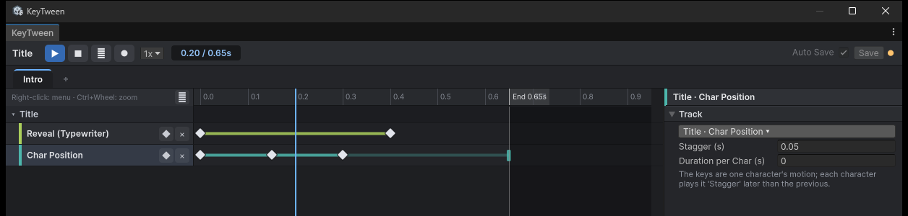

텍스트 트랙
텍스트 트랙은 TMP_Text의 글자를 움직입니다. 글자를 차례로 드러내거나, 숫자를 세거나, 글자마다 따로 움직이게 할 수 있습니다.
이런 곳에 씁니다.
- 대사창에 글자가 한 자씩 나오는 타자기: Reveal
- 보상 화면에서 골드가 0부터 올라가는 숫자: Number
- 제목 글자가 물결처럼 차례로 튀어 오르는 연출: 글자별 Position, Scale
트랙 추가 창에서 TMP_Text가 있는 오브젝트의 카드를 열면 이 트랙들이 나옵니다.
코드에서는 이렇게 씁니다. 숫자를 그때그때 다른 값까지 세려면 With로 끝 값을 줍니다. 타자기를 클릭으로 건너뛰려면 Complete를 부릅니다.
anim.With("Count").WithEndValue(goldText, KeyTweenProperty.TextNumber, gold).Play();
anim.Complete("Type"); // 대사를 끝까지 바로 보여 줍니다
Reveal (Typewriter)
보이는 글자 수를 0~1 비율로 정합니다. 리치 텍스트 태그는 글자 수에 넣지 않습니다.
Scramble은 아직 나오지 않은 글자를 무작위 문자로 채웁니다. 원문의 공백은 그대로 두므로 줄바꿈 위치가 튀지 않습니다. 문자 종류는 다음 중에서 고릅니다.
- Uppercase
- Lowercase
- Numerals
- All
Number (Count)
텍스트 안의 첫 숫자만 세어 바꾸고, 나머지 글자는 그대로 둡니다.
- 예:
21/100,Lv. 3 - 정수와 천 단위 쉼표(
1,234)를 지원합니다. - Start를 Current Value로 두면 지금 보이는 숫자에서 세기 시작합니다.
끝 숫자를 실행 중에 정하려면 코드에서 With(state).WithEndValue(...)로 재생합니다(다른 곳이 재생하는 상태는 SetEndValue). 이때 창에 있는 마지막 키 값은 미리보기용 값이 됩니다. 자세한 내용은 API를 참고하세요.
글자별 트랙
Char Scale, Char Position, Char Rotation, Char Color, Char Alpha가 글자별 트랙입니다. 글자별 트랙의 키는 글자 하나의 움직임을 나타냅니다.
| 옵션 | 뜻 |
|---|---|
| Stagger (s) | i번째 글자가 i × stagger초 늦게 시작합니다 |
| Duration per Char (s) | 0보다 크면 i번째 글자가 자기 키 전체를 i × 이 값(초) 동안 재생합니다 |
타임라인에서 마지막 키 뒤에 이어지는 연한 꼬리가 뒤쪽 글자들이 재생되는 구간입니다. 꼬리 끝을 끌면 Stagger가 바뀝니다.

글자별 트랙 합치기
같은 텍스트에 글자별 트랙이 여러 개 있으면 결과가 합쳐집니다.
| 속성 | 합치는 방식 |
|---|---|
| 크기 | 곱합니다 |
| 위치, 회전 | 더합니다 |
| 색, 알파 | 덮어씁니다 |
텍스트를 바꾼 뒤 재생하기
텍스트 트랙이 있는 상태는 재생할 때 글자 수를 새로 읽습니다. 그래서 text를 바꾼 뒤 재생하면 길이와 간격이 새 텍스트를 기준으로 정해집니다.